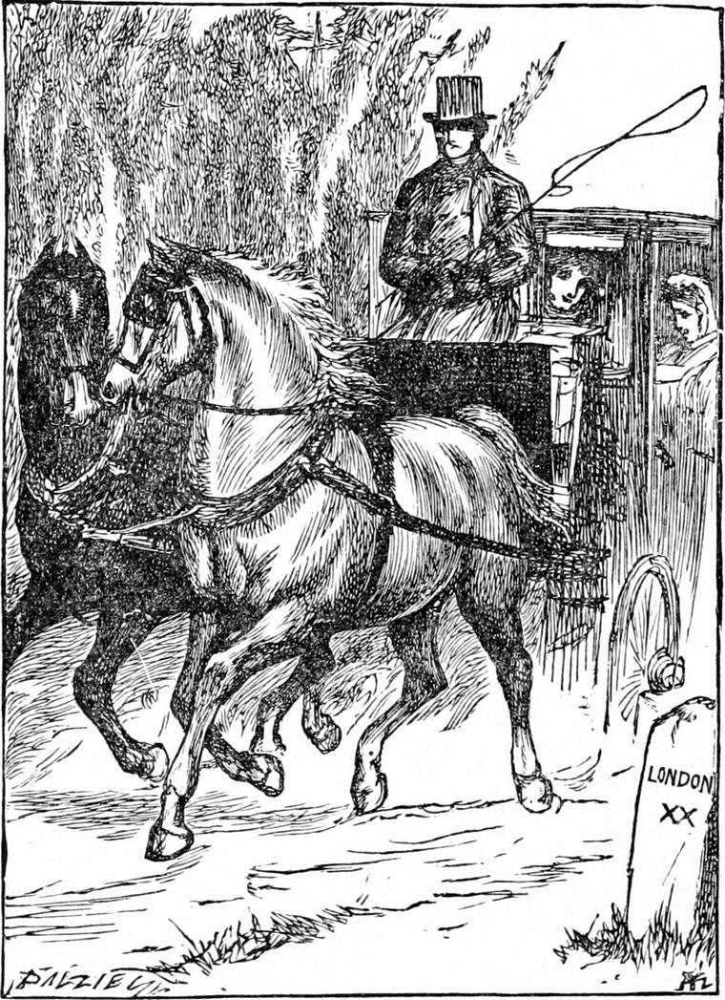

BEFORE the end of the month, Ruby had got respectably thin, and Diamond respectably stout. They really began to look fit for double harness.
Joseph and his wife got their affairs in order, and everything ready for migrating at the shortest notice; and they felt so peaceful and happy that they judged all the trouble they had gone through well worth enduring. As for Nanny, she had been so happy ever since she left the hospital, that she expected nothing better, and saw nothing attractive in the notion of the country. At the same time, she had not the least idea of what the word country meant, for she had never seen anything about her but streets and gas-lamps. Besides, she was more attached to Jim than to Diamond: Jim was a reasonable being, Diamond in her eyes at best only an amiable, over-grown baby, whom no amount of expostulation would ever bring to talk sense, not to say think it. Now that she could manage the baby as well as he, she judged herself altogether his superior. Towards his father and mother, she was all they could wish.
Diamond had taken a great deal of pains and trouble to find Jim, and had at last succeeded through the help of the tall policeman, who was glad to renew his acquaintance with the strange child. Jim had moved his quarters, and had not heard of Nanny's illness till some time after she was taken to the hospital, where he was too shy to go and inquire about her. But when at length she went to live with Diamond's family, Jim was willing enough to go and see her. It was after one of his visits, during which they had been talking of her new prospects, that Nanny expressed to Diamond her opinion of the country.
“There ain't nothing in it but the sun and moon, Diamond.”
“There's trees and flowers,” said Diamond.
“Well, they ain't no count,” returned Nanny.
“Ain't they? They're so beautiful, they make you happy to look at them.”
“That's because you're such a silly.”
Diamond smiled with a far-away look, as if he were gazing through clouds of green leaves and the vision contented him. But he was thinking with himself what more he could do for Nanny; and that same evening he went to find Mr. Raymond, for he had heard that he had returned to town.
“Ah! how do you do, Diamond?” said Mr. Raymond; “I am glad to see you.”
And he was indeed, for he had grown very fond of him. His opinion of him was very different from Nanny's.
“What do you want now, my child?” he asked.
“I'm always wanting something, sir,” answered Diamond.
“Well, that's quite right, so long as what you want is right. Everybody is always wanting something; only we don't mention it in the right place often enough. What is it now?”
“There's a friend of Nanny's, a lame boy, called Jim.”
“I've heard of him,” said Mr. Raymond. “Well?”
“Nanny doesn't care much about going to the country, sir.”
“Well, what has that to do with Jim?”
“You couldn't find a corner for Jim to work in—could you, sir?”
“I don't know that I couldn't. That is, if you can show good reason for it.”
“He's a good boy, sir.”
“Well, so much the better for him.”
“I know he can shine boots, sir.”
“So much the better for us.”
“You want your boots shined in the country—don't you, sir?”
“Yes, to be sure.”
“It wouldn't be nice to walk over the flowers with dirty boots—would it, sir?”
“No, indeed.”
“They wouldn't like it—would they?”
“No, they wouldn't.”
“Then Nanny would be better pleased to go, sir.”
“If the flowers didn't like dirty boots to walk over them, Nanny wouldn't mind going to the country? Is that it? I don't quite see it.”
“No, sir; I didn't mean that. I meant, if you would take Jim with you to clean your boots, and do odd jobs, you know, sir, then Nanny would like it better. She's so fond of Jim!”
“Now you come to the point, Diamond. I see what you mean, exactly. I will turn it over in my mind. Could you bring Jim to see me?”
“I'll try, sir. But they don't mind me much. They think I'm silly,” added Diamond, with one of his sweetest smiles.
What Mr. Raymond thought, I dare hardly attempt to put down here. But one part of it was, that the highest wisdom must ever appear folly to those who do not possess it.
“I think he would come though—after dark, you know,” Diamond continued. “He does well at shining boots. People's kind to lame boys, you know, sir. But after dark, there ain't so much doing.”
Diamond succeeded in bringing Jim to Mr. Raymond, and the consequence was that he resolved to give the boy a chance. He provided new clothes for both him and Nanny; and upon a certain day, Joseph took his wife and three children, and Nanny and Jim, by train to a certain station in the county of Kent, where they found a cart waiting to carry them and their luggage to The Mound, which was the name of Mr. Raymond's new residence. I will not describe the varied feelings of the party as they went, or when they arrived. All I will say is, that Diamond, who is my only care, was full of quiet delight—a gladness too deep to talk about.
Joseph returned to town the same night, and the next morning drove Ruby and Diamond down, with the carriage behind them, and Mr. Raymond and a lady in the carriage. For Mr. Raymond was an old bachelor no longer: he was bringing his wife with him to live at The Mound. The moment Nanny saw her, she recognised her as the lady who had lent her the ruby-ring. That ring had been given her by Mr. Raymond.

The weather was very hot, and the woods very shadowy. There were not a great many wild flowers, for it was getting well towards autumn, and the most of the wild flowers rise early to be before the leaves, because if they did not, they would never get a glimpse of the sun for them. So they have their fun over, and are ready to go to bed again by the time the trees are dressed. But there was plenty of the loveliest grass and daisies about the house, and Diamond's chief pleasure seemed to be to lie amongst them, and breathe the pure air. But all the time, he was dreaming of the country at the back of the north wind, and trying to recall the songs the river used to sing. For this was more like being at the back of the north wind than anything he had known since he left it. Sometimes he would have his little brother, sometimes his little sister, and sometimes both of them in the grass with him, and then he felt just like a cat with her first kittens, he said, only he couldn't purr—all he could do was to sing.
These were very different times from those when he used to drive the cab, but you must not suppose that Diamond was idle. He did not do so much for his mother now, because Nanny occupied his former place; but he helped his father still, both in the stable and the harness-room, and generally went with him on the box that he might learn to drive a pair, and be ready to open the carriage-door. Mr. Raymond advised his father to give him plenty of liberty.
“A boy like that,” he said, “ought not to be pushed.”
Joseph assented heartily, smiling to himself at the idea of pushing Diamond. After doing everything that fell to his share, the boy had a wealth of time at his disposal. And a happy, sometimes a merry time it was. Only for two months or so, he neither saw nor heard anything of North Wind.